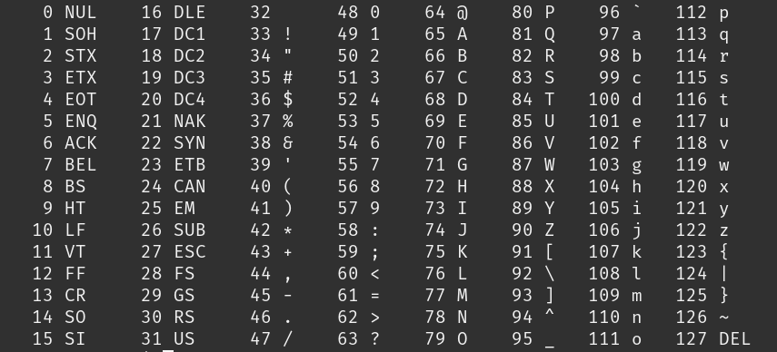

This is CS50.
CS50's Introduction to Computer Science
I was going to jump right into Week 0 of CS50x presented by HarvardX (or edX, I'm not sure what the distinction is), but I think a bit of an introduction is in order. CS50 or CS50x is an introduction to the inner-workings of the digital world, or simply, how computers work. The course is presented and made available for free on multiple platforms every year. You can find it on Youtube at CS50's Youtube account. I am currently accessing the course from Harvard's website, as well as registered with edX. It's completely free, but a verified certificate does cost some money, which I recommend to purchase if you enjoy the program as much as I have. It's a great way to show support for such an amazing resource. Alternatively, there are links to donate as well.
I love CS50. You can feel the thought and care that has gone into preparing the material and presentations, and you learn a hell of a lot of cool stuff as well. I cannot recommend taking CS50x enough. Even if you never plan to program or write code, simply learning a little bit of what goes on "behind the scenes" of a computer or phone can be invaluable in your day to day life. Learning how a computer receives, processes, and stores information, how it thinks logically, otherwise known as computational thinking, is really learning how to solve problems, and that is applicable to everything in life!
I would be remiss not to mention the amazing and dynamic professor David J. Malan. Once again, you can feel the thought and care that he has for the material and the art of teaching as a whole. His excitement is contagious, and he's a large part of what makes the course so excellent. Thank you, David!
What does Harvard have to say? According to the course website:
This is CS50, Harvard University’s introduction to the intellectual enterprises of computer science and the art of programming, for concentrators and non-concentrators alike, with or without prior programming experience. (Two thirds of CS50 students have never taken CS before.) This course teaches you how to solve problems, both with and without code, with an emphasis on correctness, design, and style. Topics include computational thinking, abstraction, algorithms, data structures, and computer science more generally. Problem sets inspired by the arts, humanities, social sciences, and sciences. More than teach you how to program in one language, this course teaches you how to program fundamentally and how to teach yourself new languages ultimately. ..."
In other words? CS50 is an introduction to computer science and the art of programming. The course is for everyone, programmer or not. The focus is on solving problems correctly by breaking them down step by step and implementing solutions that make sense. It's not about learning a specific language, but rather learning how computers work as a whole.
Computer science
Week 0 starts by defining Computer Science. What is it? Computer science is a general purpose way of thinking. It's problem-solving, one step at a time. It's thinking like computers do. Using functions, conditions, and loops to create algorithms and programs to solve real world problems. The specific programming language doesn't matter so much, rather the focus is on the way to think and express yourself, translating your thoughts and the actions you want to accomplish into code.
What do those words mean though?
- A function is an action for the computer to take.
- A condition tells the computer to check for something before taking action.
- A loop means running the same action again and again. There's different types of loops, but more on that later.
- An algorithm is a step-by-step set of instructions to do something.
- Similarly, a program is a set of instructions for the computer to do something. Programs use algorithms, but they're specifically made up of code in a programming language the computer can understand.
As humans we take a lot of things for granted. For instance, the human brain is quite incredible. It may not seem like it, but we're really really good at multitasking. Think of the act of throwing a ball. Your brain has to read your environment, find your target, locate any obstacles, estimate the distance, estimate the strength you'll need, then tell which muscles to move your arm by what amount, which tendons to move your hand by what amount, and the timing of each. Think about our ability to scan and recognize patterns, to focus on one thing, yet remain open to changes in the environment. That's not even mentioning all the sub-processes that go into working with turning air into oxygen, food into energy, energy into proteins, feeding cells, fixing cells, making new cells, etc. etc. etc. We're amazing!
Unlike the human brain, which can process and respond to hundreds if not thousands of inputs all at once, computers can only speak binary, or 0s and 1s. What does that mean? Well, computer's use electricity to work, and it can only really tell if electricity is either there or it's not. Inside a computer chip, there's billions of tiny switches, called transistors, that turn on and off to store information. What is that information? Well, if it has electricity - it's turned ON, it's 1. If it doesn't have electricity - it's turned OFF, it's 0. This is binary. Each one of these 0s and 1s is a binary digit or bit. But just knowing 1 number is not very useful, that's why we group them together into bytes, which is 8 bits that make up 1 number.
Binary
To count in binary, each digit you add doubles the number you can count to. Why? Well, think of 0 0 0 as being 0. To count to 1 you could do 0 0 1. Easy. But to count to 2, does it make sense to do 0 1 1? No, you're limited by the amount of space you have. Let's take a look at the total number of combinations that 0 0 0 gives us, we can do:
- 0 0 0
- 0 0 1
- 0 1 0
- 0 1 1
- 1 0 0
- 1 0 1
- 1 1 0
- 1 1 1
So, to make the most use of our available space, 2 becomes 0 1 0. This isn't as odd as it may seem at first. The "normal" numbers we use are called decimals, which means they use the base-10 system, or each digit represents a factor of 10. How does that look?
- 100
- 1
- 10
- 2
- 1
- 3
In the number 123, you're reading one hundred and twenty-three, but it's actually (1 * 100) + (2 * 10) + (3 * 1), or 100 + 20 + 3. Which is 123.
In binary, instead of increasing by factors of 10, numbers increase by factors of 2.
- 4
- 1
- 2
- 1
- 1
- 1
So 1 1 1, has 3 digits, or bits, and each bit can be 2 possible values, so the highest number would be 23, or 2 * 2 * 2 = 8. But wait a second? If we do the math, we get: (1 * 4) + (1 * 2) + (1 * 1), or 4 + 2 + 1. Shouldn't it be 8? Short answer, it's a computer science thing because computers always start counting at 0. 0 is itself a value, so it counts as 1. This comes up a lot, so it's good to remember the higest number in our computer is actually n - 1.
Counting to 8 (or 7) is not all that useful for us, we need more numbers. Usually instead of bits we refer to bytes, which are 8 bits. Why 8? It's a power of 2, and as you'll soon see the original designers needed a big enough number to store the information they needed, so 8 bits is a useful convention in computers. What does a byte look like?
- 128
- 1
- 64
- 1
- 32
- 1
- 16
- 1
- 8
- 1
- 4
- 1
- 2
- 1
- 1
- 1
28 = 256, but remember to account for 0 with n - 1, so in total we can count to 255.
But what does all this binary mean for computers? Since computers can only read 0s and 1s, they're only ever storing numbers, not text and letters, images and videos like you and I. How do we get around this, or rather, work through it? For letters, we can assign each character or letter a number. Enter ASCII.
ASCII: American Standard Code for Information Interchange
Of course, this is only for english, and nowadays we need many more characters (think of emoji alphabets and special characters and other languages, more on that later), but when computers were first being built, the designers all had to agree on a standard so that information could be read and understood between computers, hence the Standard Code for Information Interchange. So when you're seeing the capital letter 'A' on your computer or phone, the computer really doesn't see 'A', it sees a byte storing the number '65' or 01000001.
So, a word like "HI!"", would be a string of 3 bytes, each representing the corresponding number. What would the computer see?
- 72
- 01001000
- H
- 73
- 01001001
- I
- 33
- 00100001
- !
Nowadays we use Unicode, which has up to a 32-bit encoding (UTF-8, UTF-16, UTF-32), which represents up to 4,294,967,296 values! Unicode's mission is to enable "all devices (laptops, smartphones, tablets, cloud computers) to share or exchange text that is written in any language or with symbols." Each emoji on your keyboard and every character in every language has a unique code that's consistent so we can all read and understand the same thing.
RGB
So that makes sense for text, each individual item has a code that matches, but what about images? We can't assign a number to every image in the world, we need to break them down further. One of the most common ways is to break down each color into an RGB value. Every dot on your screen, whether it's a computer screen or a phone, is called a pixel. Each pixel has a red light, a green light, and a blue light. And if we keep track of how much red, green, and blue to display, we can represent every color in the rainbow, from white to black. So, each pixel is 3 separate numbers, one for Red, one for Green, and another for Blue. Let's see an example:
- 72
- 73
- 33
72 red, 73 green, and 33 blue become:
- 72
But wait... 72, 73, and 33, were already used by "HI!". Well, the information a computer displays is largely dependent on context, and a lot of times it's up to the programmer to tell it what type of value it's storing. For example, in a text based app the string of 0s and 1s will usually be text or numbers, whereas in a graphic or photo based app, those same 0s and 1s would correspond to colors in an image. And if you put enough colors next to eachother, you start to form an image.
What about video? Well, a video, or what used to be called motion pictures, is just a lot of pictures being shown in order really fast, which makes looks like it's moving. There's a term in video and videogames called FPS or Frames-per-Second. The standard FPS for movies is about 24, whereas videogames keep demanding more and more, from 60 to 120 to 240 and beyond. This means that every second 24 (or whatever your FPS is) pictures are being shown on the screen.
Sound is even more interesting, as it's a continuous function that constantly changes, typically represented as a sound wave. How do we store this? Well, at regular intervals we sample, or check, the sound and store it's amplitude (how much it vibrates) in a binary value. I highly recommend reading this blog on the subject if you're interested to learn more.
All this is to say, some really smart people have figured out a way to build really complex functions and systems from a base as simple as 0 and 1. Amazing, isn't it!
Algorithms
As I defined above, an algorithm is a set of step-by-step instructions to do something. Code is the implementation in computers of algorithms. Of course, code requires knowing a programming language's syntax, or rules that make the language work and make sense. I'll leave that to next week, getting into the language C. Let's talk about algorithms. There's 3 things to consider with algorithms, correctness, efficiency, and design.
In the lecture, the problem we solved was finding someone in a phonebook. How can we go about doing that? Well, given a name, our algorithm could be this: we search each page, one at a time. If the person is on the page, return their phone number, otherwise, go to the next page. Is this algorithm correct? Yes! Is this algorithm efficient? Not really, in fact, it would probably be really slow. If the person is on the last page of the phonebook, and let's say the phonebook is 10,000 pages long, it would take 10,000 steps to find that person, or it would take n steps to complete the algorithm.
Alternatively, we could search 2 pages at a time, thereby cutting the problem in half. Now, if we have 10,000 pages, it would take n / 2 or 10,000 / 2 = 5,000 steps. But is this algorithm correct? Say the person we're looking for is in one of the pages we skipped, then we wouldn't be able to find them, and our algorithm would fail, so it's not correct. But we can fix that with a conditional, if we've gone too far, backtrack one page. Now the algorithm is correct and the amount of steps the algorithm takes is (n / 2) + 1. This is still really slow. Think about the amount of people in a city, or websites on Google, your search could run into the millions, even billions of things to look through!
The solution: we need a better algorithm. How have software engineers solved this problem in the past? They cut the problem in half. Now, instead of looking through each page, or a group of pages, let's go roughly to the middle of the phonebook and we're in the M section, is the last name of the person we're looking for before or after M? If before, then throw away the second half of the book. If after, throw away the first half of the book. Then do the same thing again, until you're left with 1 page. Now, as our phonebook increases exponentially, we aren't adding all that many more steps. If our 10,000 page book becomes 20,000, instead of doubling the amount of pages to search through, it's only 1 extra step. 20,000 > 10,000 > 5,000... etc. This is a solution of log n.
We can see the difference in efficiency in the following chart:

Now, as problems get bigger and bigger, as data gets bigger and bigger, our time to solve remains relatively stable.
Code
Pseudocode, from greek pseudo meaning false, and code, defined above, is code that's not really code, but imitating it. It's the practice of outlining the code you want to implement in plain english, and it's very important to be precise and mimick how a computer would think. This is a very useful practice to get into for coding, because it requires you to analyze the problem you'd like to solve, define it, explain how you will solve it, then start breaking it into smaller problems with specific steps that the computer can take that will solve the problem.
Let's see an example of this from the phonebook algorithm:
- Pick up phone book
- Open to middle of phone book
- Look at page
- If person is on page
- Call person
- Else if person is earlier in book
- Open to middle of left half of book
- Go back to line 3
- Else if person is later in book
- Open to middle of right half of book
- Go back to line 3
- Else
- Quit
Now, there's some coding syntax here, and the selection of words used was intentional because they'll be used and make more sense once actually in a program, but the english is clear enough to understand without knowing exactly why it's written the way it is. Does the pseudocode make sense and are you able to follow the instructions? Good. You can even start to see some of the building blocks of code. Let's highlight them:
- Pick up phone book
- Open to middle of phone book
- Look at page
- If person is on page
- Call person
- Else if person is earlier in book
- Open to middle of left half of book
- Go back to line 3
- Else if person is later in book
- Open to middle of right half of book
- Go back to line 3
- Else
- Quit
- Functions
- Conditionals
- Boolean expressions
- Loops
Once you start understanding and thinking in this if / then way, which is how computers think, then you can start writing code and programs in any language! Exciting, right? This has even helped me in the real world, since computer programs just break down every problem into it's simplest parts and tackle them one at a time. So, if I have something I need to get done, or I'm not sure what to do, I can start by asking myself "What am I ultimately trying to accomplish?" Then, "What steps do I need to take to accomplish my goal?" or even "What is the simplest thing I can do right now to make a difference in this situation?"
The rest of the lecture deals in Scratch, which is a very cool, very interactive programming language that MIT built over 20 years ago. In it, you have a nice graphic interface to build programs using blocks that represent real-world computer instructions such as functions, parameters, loops, and conditionals. It's really an amazing educational tool to introduce programming to anyone. I didn't get started that way, as I came into this program already being a web developer. And in fact, I haven't done the problem set for week 0 yet (don't tell anyone!), but I may circle around to it if I have the time. If you're interested, it's a free web program and can be accessed at scratch.mit.edu.
This has been really great reviewing my notes from the Week 0 lecture, researching certain concepts a little bit more when needed, verifying all the information is correct, and writing it all out as if I were teaching it myself. Again, my goal for this project is to reinforce my own learning, and have a personal resource to check back on when needed. This is purely intended for personal use, and all credit goes to the CS50x Course and the amazing staff that makes it all possible.